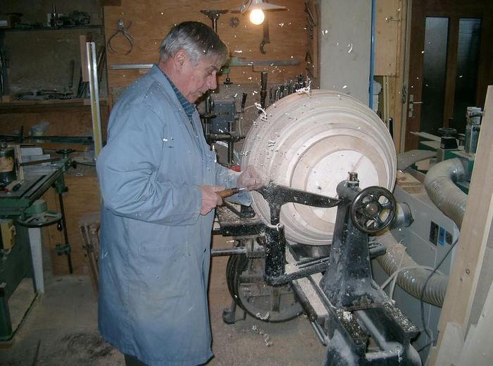

1928
Gründung als Wagnerei in Alpnach. Der Betrieb war von Anfang an lokal verankert.
Aus der Wagnerei wurde eine Schreinerei. Über die Generationen hinweg ist die Haltung dieselbe geblieben: präzis arbeiten, vernünftig beraten und nah bei der Kundschaft sein.

Die Firma wurde 1928 vom Grossvater als Wagnerei gegründet. Später führte der Vater den Betrieb weiter und baute ihn zur Schreinerei aus. Heute wird die A. von Atzigen AG in dritter Generation von gelernten Schreinern weitergeführt.
Gründung als Wagnerei in Alpnach. Der Betrieb war von Anfang an lokal verankert.
Ausbau zum kleinen Schreinerbetrieb mit Fokus auf praktische, individuelle Arbeiten.
Weiterführung in der dritten Generation mit Werkstatt, Erfahrung und direktem Kundenkontakt.
Diese drei Punkte prägen unsere Arbeiten bis heute. Wir wollen keine laute Selbstdarstellung, sondern Resultate, die sauber aussehen, lange halten und im Alltag überzeugen.

Holz verlangt ein gutes Auge für Proportionen, Oberfläche und Nutzung. Das ist Teil unserer täglichen Arbeit.

Wir bevorzugen Lösungen, die unaufgeregt wirken und gerade deshalb stimmig bleiben.
Wir nehmen uns Zeit für ein klares Gespräch und sehen uns die Situation wenn nötig vor Ort an.